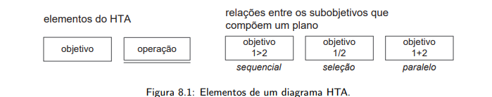
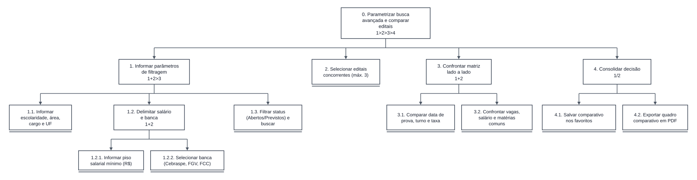
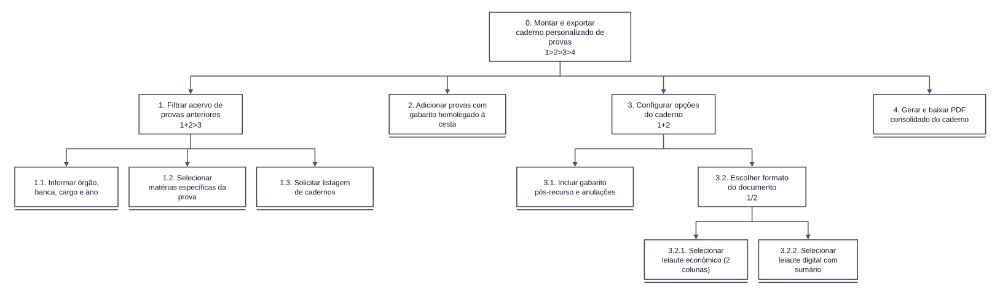
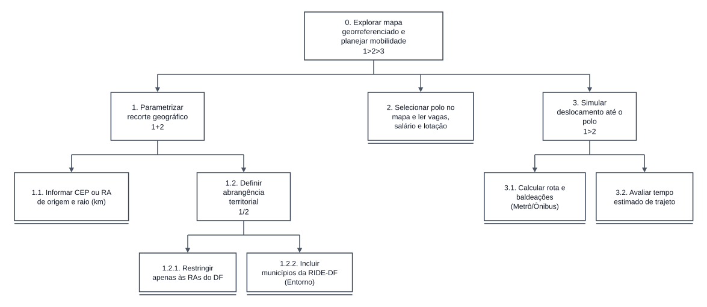
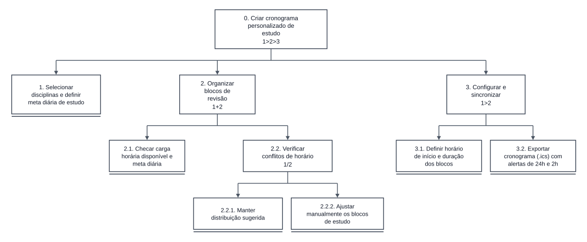
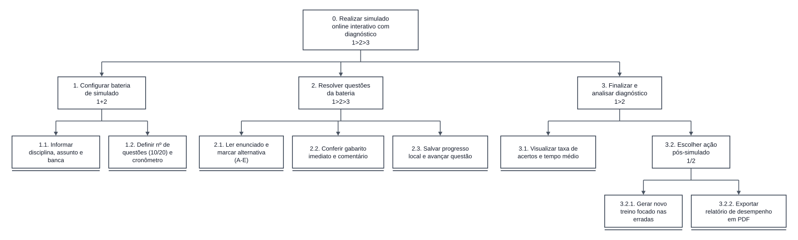
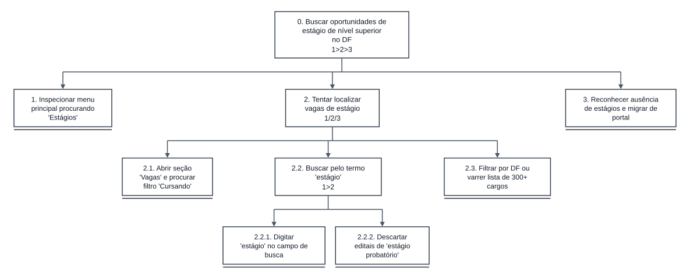
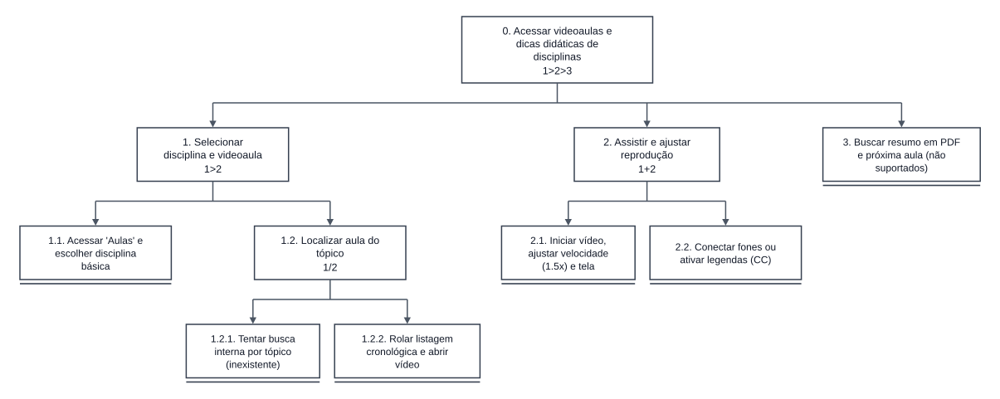
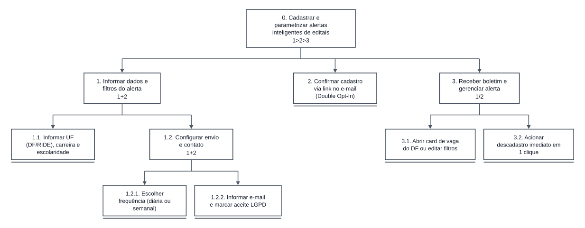

Tabela de Contribuição
| Membro | Contribuição |
|---|---|
| Daniel da Silva Batista | Fundamentação teórica de HTA (Annett & Duncan, 1967; Barbosa e Silva, 2010), elaboração da tabela de legenda da notação, estruturação da matriz de tarefas, modelagem formal completa com diagramas e tabelas das Tarefas 01 e 02 e organização dos templates para a equipe. |
| Arthur Sismene Carvalho | Revisão da decomposição funcional e modelagem HTA integral das Tarefas 05 e 06 (diagramas e tabelas analíticas), incluindo a caracterização da TAR-06 como tarefa não suportada e o levantamento da colisão terminológica de "estágio". |
| Leonardo da Silva Lopes Júnior | Modelagem formal completa em HTA (diagramas de decomposição e tabelas analíticas com problemas e recomendações de usabilidade) das Tarefas 07 e 08, fundamentadas em DOC-04 e na persona Renata Cristina Freitas (PER-04); estruturação da Seção 2.1 de enquadramento ergonômico e níveis de complexidade, e refinamento do escopo de tarefas interativas propositivas (TAR-04, TAR-05 e TAR-08) (Issue #14). |
| Pedro Rocha Ferreira Lima | Modelagem formal completa em HTA (diagramas e tabelas analíticas com problemas e recomendações) das Tarefas 03 e 04 com base no método sem usuário (DOC-02) e na persona Lucas Ferreira Rocha. |
| Gemini | Geração dos diagramas HTA vetoriais na notação oficial de Barbosa et al. (2021, Figura 8.1) e auxílio na estruturação textual do artefato em Markdown (conforme Política de Uso de IA). |
Fonte: Daniel da Silva Batista (2026).
Análise Hierárquica de Tarefas (HTA)
1. Introdução e Fundamentação Teórica
A Análise Hierárquica de Tarefas (Hierarchical Task Analysis - HTA), desenvolvida originalmente por Annett e Duncan (1967) e detalhada por Barbosa et al. (2021, Cap. 8, Seção 8.2.1) e Barbosa e Silva (2010, Cap. 8.4), é um dos métodos clássicos e mais consolidados de análise de tarefas em Interação Humano-Computador. A técnica baseia-se na decomposição funcional de alto nível dos objetivos de um usuário em subobjetivos menores e, no nível mais baixo da árvore, em operações elementares — que correspondem às ações concretas executadas por pessoas ou sistemas para atingir cada estado desejado.
No HTA, conforme preceituam Barbosa et al. (2021), a decomposição de um objetivo em subobjetivos é regida por um plano, que define os subobjetivos necessários e as relações lógicas de execução entre eles: sequencial (>), seleção (/) ou paralelo (+). A Figura 0 e a Tabela 1 sintetizam a notação oficial adotada nos diagramas deste artefato:
Figura 0: Elementos de um diagrama HTA segundo o livro-texto IHC-UX

Fonte: Barbosa et al. (2021, Figura 8.1 — Interação Humano-Computador e Experiência do Usuário).
Tabela 1: Notação e Legenda dos Elementos da HTA (Barbosa et al., 2021)
| Elemento Gráfico / Estrutural | Representação no Diagrama | Significado e Função Metodológica |
|---|---|---|
| Objetivo / Subobjetivo | Caixa retangular simples [ objetivo ] com numeração hierárquica (0., 1., 1.2.) |
Estado que o usuário deseja atingir e que ainda se decompõe em subobjetivos ou operações, trazendo na linha inferior a expressão algébrica do plano (1>2, 1/2, 1+2). |
| Operação (Nível Mais Baixo) | Caixa retangular com linha horizontal abaixo da borda inferior [ operação ] |
Unidade terminal da decomposição HTA; especifica em nível mais baixo de abstração a ação concreta e os dados informados/manipulados pelo usuário ou sistema. |
Relação Sequencial (>) |
1>2 (ou 1>2>3) |
O subobjetivo/operação 1 deve ser concluído antes do início do subobjetivo/operação 2. |
Relação de Seleção (/) |
1/2 (ou 1/2/3) |
Escolha condicional ou alternativa: executa-se 1 ou 2, conforme a regra detalhada no rodapé específico de cada diagrama. |
Relação Paralela (+) |
1+2 |
Os subobjetivos 1 e 2 são ambos realizados, em paralelo ou em qualquer ordem, antes da etapa subsequente (ex.: 1+2>3). |
Fonte: Daniel da Silva Batista (2026), com base em Barbosa et al. (2021, Figura 8.1) e Annett & Duncan (1967).
2. Matriz de Tarefas do PCI Concursos
Com base nos perfis de usuário delineados na pesquisa de requisitos e no escopo funcional do portal PCI Concursos, foram consolidadas oito tarefas representativas, correspondendo exatamente a duas tarefas por integrante ativo da equipe, articulando o diagrama de decomposição com a análise crítica de usabilidade.
2.1 Enquadramento Ergonômico e Níveis de Complexidade das Tarefas
Em conformidade com as recomendações do professor da disciplina (SALES, 2026) e as diretrizes ergonômicas de Annett e Duncan (1967), Diaper (2003) e Barbosa e Silva (2010), uma análise de tarefas consistente em IHC não pode se restringir a procedimentos meramente operacionais e rasos (como simples cliques para download de arquivos ou leituras passivas de tabelas estáticas). A literatura prescreve que o valor da análise reside em mapear o raciocínio cognitivo, os processos de tomada de decisão, o tratamento de incertezas e os ciclos interativos homem-máquina.
Para assegurar essa profundidade — alinhando-se ao rigor demonstrado na delimitação de tarefas do Grupo 06 —, o Grupo 07 organizou as tarefas em três níveis de complexidade funcional:
- Nível 1 — Tarefas de Decisão Multicritério e Planejamento Comparativo (TAR-01 a TAR-03): Representam os fluxos analíticos e estratégicos de alto valor decisório para o concurseiro:
TAR-01(Parametrizar busca avançada multicritério e comparar editais concorrentes lado a lado): Supera a mera busca textual ao prover um motor de filtragem combinada (escolaridade, faixa salarial, banca examinadora e status) articulado com um módulo comparador de certames em matriz paralela (confrontando datas de prova, vagas, remuneração e disciplinas comuns);TAR-02(Montar e exportar caderno personalizado de estudos de provas anteriores com gabarito comentado integrado): Supera o download passivo de arquivos isolados ao viabilizar a composição modular de provas por banca, ano e disciplina, unificando caderno de questões e gabaritos oficiais definitivos em arquivo de estudo com layout configurável;TAR-03(Explorar mapa interativo georreferenciado de oportunidades com cálculo de mobilidade no DF e RIDE): Supera a listagem estática de estados ao permitir exploração cartográfica interativa, aplicação de raio de deslocamento a partir da residência do candidato e cálculo estimado de tempo de trânsito até os polos de aplicação e lotação.- Nível 2 — Tarefas Interativas Ricas e Engajamento Cognitivo (TAR-04, TAR-05 e TAR-08): Constituem funcionalidades bidirecionais de alta relevância ergonômica:
TAR-04(Criar cronograma personalizado de estudo com distribuição de blocos de revisão e sincronização de lembretes): Provê motor de geração automática de cronograma a partir das disciplinas e da carga horária disponível informadas pelo concurseiro, detecção de conflitos de horário com ajuste manual por arrastar e soltar, e exportação de lembretes para calendários digitais (.ics / Google Agenda);TAR-05(Sistema de Simulados Online Interativo): Provê um motor avaliativo com parametrização de filtros (disciplina, banca, volume de questões, temporizador regressivo), áreas de toque móveis adaptadas ($\ge 48\text{px}$), feedback formativo imediato por alternativa, gabarito oficial comentado e consolidação estatística com tolerância a oscilações de sinal (Zero Data Loss);TAR-08(Calendário Pessoal de Concursos com Gestão de Inscrições e Lembretes de Prazos): Supera a gestão fragmentada e passiva de editais ao prover um painel interativo de acompanhamento de múltiplos certames (inscrições, vencimento de boletos bancários com contadores regressivos, datas de provas e recursos), detecção visual de conflitos de datas entre editais concorrentes, checklist de status de pagamento e exportação dinâmica de eventos com lembretes para Google Agenda e calendários digitais (.ics).- Nível 3 — Tarefas Propositivas e Superação de Lacunas de IHC (TAR-06 e TAR-07): Tratam de tarefas que expandem o escopo do portal para atender demandas reprimidas (como a inclusão de estágios de nível superior no DF e reprojeto de videoaulas com Modo Foco).
A Tabela 2 a seguir consolida a matriz oficial de tarefas da equipe:
Tabela 2: Matriz Oficial de Tarefas Avaliadas
| ID | Descrição da Tarefa | Integrante Responsável |
|---|---|---|
| TAR-01 | Parametrizar busca avançada multicritério e comparar editais concorrentes lado a lado | Daniel da Silva Batista |
| TAR-02 | Montar e exportar caderno personalizado de provas anteriores com gabarito comentado integrado | Daniel da Silva Batista |
| TAR-03 | Explorar mapa interativo georreferenciado de oportunidades com cálculo de mobilidade (DF e RIDE) | Pedro Rocha Ferreira Lima |
| TAR-04 | Criar cronograma personalizado de estudo com distribuição de blocos de revisão e sincronização de lembretes | Pedro Rocha Ferreira Lima |
| TAR-05 | Realizar simulado de questões online interativo com feedback automático de gabarito e diagnóstico de desempenho | Arthur Sismene Carvalho |
| TAR-06 | Buscar oportunidades de estágio de nível superior no DF (Tarefa não suportada) | Arthur Sismene Carvalho |
| TAR-07 | Acessar videoaulas e dicas teóricas de disciplinas | Leonardo da Silva Lopes Júnior |
| TAR-08 | Organizar e acompanhar múltiplos certames no Calendário Pessoal de Concursos com prazos de inscrição, pagamento de boleto e exportação para agenda digital | Leonardo da Silva Lopes Júnior |
Fonte: Daniel da Silva Batista e Pedro Rocha Ferreira Lima (2026).
3. Modelagem Detalhada das Tarefas (Daniel da Silva Batista)
3.1 Tarefa 01: Parametrizar busca avançada multicritério e comparar editais concorrentes lado a lado (TAR-01)
A Tarefa 01 foi reformulada para superar o modelo elementar de busca textual isolada, elevando o nível de maturidade ergonômica da plataforma. A tarefa modela o processo decisório de concurseiros adultos — representados pela persona primária Maria Helena dos Santos (PER-01) —, que necessitam conciliar múltiplos critérios de elegibilidade (escolaridade, faixa remuneratória, banca examinadora, lotação geográfica e status do certame) e confrontar diretamente certames com cronogramas conflitantes ou conteúdos programáticos concorrentes.
A decomposição hierárquica de objetivos e planos da Tarefa 01 é ilustrada na Figura 1, e a especificação detalhada de suas operações funcionais, problemas identificados e recomendações de design é apresentada na Tabela 2.
Diagrama de Decomposição HTA (Figura 1)
Figura 1: Diagrama HTA da Tarefa 01 - Parametrizar busca avançada multicritério e comparar editais concorrentes

Fonte: Daniel da Silva Batista (2026), em conformidade com a notação de Barbosa et al. (2021, Figura 8.1) e Persona PER-01.
Tabela HTA: Objetivos, Operações, Problemas e Recomendações
Tabela 2: Análise HTA da Tarefa 01
| Objetivos / Operações | Relações / Planos | Problemas Identificados | Recomendações de Usabilidade |
|---|---|---|---|
| 0. Parametrizar busca avançada e comparar editais concorrentes | Plano 0. (1>2>3>4): Executar 1, 2 e 3 em sequência. Se houver sobreposição de certames ou necessidade de escolha estratégica, executar 4. |
O portal atual limita-se a um campo textual raso, desprovido de filtros combinados e de qualquer ferramenta de comparação entre certames. | Projetar mecanismo de busca facetada multicritério integrado a uma matriz comparativa lado a lado (RF-DOC-01). |
| 1. Definir parâmetros da busca avançada | Plano 1. (1+2+3>4): Executar 1.1, 1.2 e 1.3 em qualquer ordem (+); depois 1.4 (>). |
Inexistência de busca facetada: o usuário é obrigado a realizar buscas textuais repetidas e navegar manualmente em múltiplas páginas. | Disponibilizar formulário de busca avançada com seletores dinâmicos de escolaridade, faixa salarial, banca e abrangência territorial. |
| 1.1 Especificar escolaridade e área | Operação funcional | Ausência de taxonomia padronizada de cargos e áreas no mecanismo de consulta. | Implementar autocompletar semântico com agrupamento por carreira (ex.: Administrativa, Fiscal, TI). |
| 1.2 Delimitar faixa salarial e banca | Operação funcional | Salários e bancas estão dispersos em textos corridos não indexados de forma estruturada. | Criar controles deslizantes (sliders) de remuneração e seleção múltipla de bancas examinadoras. |
| 1.3 Filtrar situação do certame | Operação funcional | Certames suspensos, previstos e encerrados misturam-se indiscriminadamente na mesma listagem. | Adicionar filtros por status do edital com etiquetas visuais padronizadas ([Inscrições Abertas], [Previsto]). |
| 1.4 Submeter parâmetros de consulta | Operação de sistema | A busca atual recarrega a página inteira de forma síncrona, descartando seleções parciais. | Implementar filtragem reativa instantânea sem recarregamento da página (AJAX). |
| 2. Analisar certames e selecionar concorrentes | Plano 2. (1>2): Executar 2.1 e depois 2.2 (>). |
Ausência de recurso para selecionar e fixar múltiplos certames para posterior confrontação. | Adicionar caixa de seleção (checkbox) em cada card de concurso: "Adicionar à Comparação (máx. 3)". |
| 2.1 Avaliar aderência ao perfil | Operação cognitiva | Cards de resultado apresentam layout sobrecarregado de publicidade contextual concorrente. | Isolar os resultados em cards limpos com tipografia contrastante e dados essenciais visíveis. |
| 2.2 Marcar certames concorrentes | Operação funcional | O usuário perde o contexto ao abrir dezenas de abas simultâneas do navegador para analisar opções. | Exibir barra inferior flutuante (dock) exibindo os certames marcados para comparação direta. |
| 3. Confrontar matriz comparativa lado a lado | Plano 3. (1+2+3): Executar 3.1, 3.2 e 3.3 simultaneamente na matriz (+). |
Funcionalidade Ausente no Portal: Impossibilidade de contrastar regras de editais concorrentes sem leitura integral dos anexos em PDF. | Construir visualização em grade tabular comparando os certames lado a lado em colunas paralelas (RF-DOC-01). |
| 3.1 Comparar datas de prova e taxas | Operação cognitiva | Risco crítico de inscrição em dois certames que terão provas aplicadas no mesmo turno/data. | Sinalizar com alerta cromático de conflito quando as datas de prova coincidirem. |
| 3.2 Confrontar distribuição de vagas | Operação cognitiva | Dificuldade para identificar cota de vagas para ampla concorrência, PCD e cadastro reserva. | Exibir tabela resumida com divisão de vagas imediatas e valor da remuneração inicial. |
| 3.3 Analisar convergência de disciplinas | Operação cognitiva | Alto custo de atenção para mapear o percentual de disciplinas comuns entre os conteúdos programáticos. | Calcular índice percentual de afinidade de conteúdo (ex.: "75% de matérias comuns entre os dois editais"). |
| 4. Deliberar priorização e exportar síntese | Plano 4. (1/2): Executar 4.1 ou 4.2 (/) dependendo da preferência de arquivamento. |
Impossibilidade de armazenar ou compartilhar a análise comparativa gerada. | Disponibilizar persistência em área de certames monitorados e exportação de sumário em PDF/impresso. |
| 4.1 Salvar painel nos favoritados | Operação funcional | Falta de recurso de memorização de certames de interesse para acompanhamento contínuo. | Permitir fixação dos certames no painel do concurseiro com persistência local no navegador. |
| 4.2 Exportar relatório comparativo | Operação funcional | Ausência de extrato consolidado para tomada de decisão em ambiente offline. | Gerar documento PDF sintetizado com a grade comparativa de oportunidades. |
Fonte: Daniel da Silva Batista (2026), com base na Análise Documental DOC-01 e na Persona PER-01.
3.2 Tarefa 02: Montar e exportar caderno personalizado de provas anteriores com gabarito comentado integrado (TAR-02)
A Tarefa 02 transcende o download elementar e passivo de arquivos isolados, remodelando a preparação prática por resolução de questões. Na rotina da persona primária Maria Helena dos Santos (PER-01), que dispõe de tempo restrito de estudo e prioriza treino por repetição com cadernos impressos ou anotados, o modelo mental exige um compilador unificado de provas anteriores por disciplina, banca e ano, com gabarito oficial pós-recurso integrado e sem a intrusão de falsos botões de download patrocinados.
A decomposição da Tarefa 02 é apresentada no diagrama da Figura 2, e sua correspondente análise detalhada de operações, problemas e recomendações é fornecida na Tabela 3.
Diagrama de Decomposição HTA (Figura 2)
Figura 2: Diagrama HTA da Tarefa 02 - Montar e exportar caderno personalizado de estudos com gabarito

Fonte: Daniel da Silva Batista (2026), em conformidade com a notação de Barbosa et al. (2021, Figura 8.1) e Persona PER-01.
Tabela HTA: Objetivos, Operações, Problemas e Recomendações
Tabela 3: Análise HTA da Tarefa 02
| Objetivos / Operações | Relações / Planos | Problemas Identificados | Recomendações de Usabilidade |
|---|---|---|---|
| 0. Montar e exportar caderno personalizado com gabarito | Plano 0. (1>2>3>4): Executar 1, 2, 3 e 4 em sequência estrita (>). |
Fragmentação extrema: o candidato precisa baixar arquivos PDF avulsos de provas e gabaritos em links separados, organizando tudo manualmente. | Projetar compilador de cadernos de estudo personalizados com unificação de provas, gabaritos e sumários (RF-DOC-02). |
| 1. Filtrar repositório de provas anteriores | Plano 1. (1+2+3>4): Executar 1.1, 1.2 e 1.3 em qualquer ordem (+); depois 1.4 (>). |
O acervo de provas é exibido como uma lista alfabética estática e massiva, sem mecanismos de busca facetada por banca ou ano. | Implementar filtros estruturados com paginação dinâmica e busca instantânea por banca e cargo. |
| 1.1 Selecionar órgão, banca e ano | Operação funcional | Falta de filtro combinado: não é possível selecionar simultaneamente "Cebraspe + 2023 a 2025". | Permitir seleção múltipla de anos de aplicação e bancas examinadoras. |
| 1.2 Especificar cargo ou escolaridade | Operação funcional | Nomes de cargos sofrem com inconsistências ortográficas na base de dados antiga. | Normalizar a taxonomia de cargos por agrupamento de carreiras. |
| 1.3 Segmentar disciplinas temáticas | Operação funcional | As provas só estão disponíveis na íntegra, sem possibilidade de extrair apenas matérias básicas (ex.: Português e Raciocínio Lógico). | Implementar categorização temática de blocos de questões por disciplina. |
| 1.4 Requisitar listagem de cadernos | Operação de sistema | Lentidão no carregamento da tabela com grande volume de itens. | Adicionar pré-carregamento assíncrono com feedback de progresso. |
| 2. Selecionar cadernos e compor pacote | Plano 2. (1>2): Executar 2.1 e depois 2.2 (>). |
Ausência de cesta/carrinho de estudo para agrupar múltiplos cadernos antes de descarregar. | Criar componente de "Montador de Caderno" onde o usuário adiciona cadernos com um único comando. |
| 2.1 Inspecionar cadernos e gabaritos | Operação cognitiva | Falta de clareza sobre qual gabarito é o definitivo após os recursos judiciais/administrativos. | Exibir selo explícito: [Gabarito Definitivo Homologado - 2 Questões Anuladas]. |
| 2.2 Adicionar cadernos ao pacote | Operação funcional | O usuário perde a conta de quantos arquivos já baixou individualmente no computador. | Exibir sumário em tempo real com contador de itens e estimativa de páginas totais. |
| 3. Configurar parâmetros de geração | Plano 3. (1+2+3): Executar 3.1, 3.2 e 3.3 simultaneamente (+) nas opções de compilação. |
Inexistência de personalização: o usuário é obrigado a imprimir dezenas de páginas com layouts e cabeçalhos poluídos de terceiros. | Oferecer painel de opções de compilação gráfica e pedagógica antes da geração final do documento. |
| 3.1 Definir gabarito com sinalização | Operação funcional | Gabaritos separados obrigam o estudante a alternar entre documentos ou telas para checar respostas. | Incorporar a chave de respostas ao final de cada bloco de prova com anulações devidamente justificadas. |
| 3.2 Selecionar modo de formatação | Operação funcional | Arquivos PDF convencionais gastam muita tinta e papel com cabeçalhos e publicidade embutida. | Disponibilizar opção de "Modo Impressão Econômica" (duas colunas compactas, sem imagens decorativas). |
| 3.3 Habilitar folhas de rascunho e índice | Operação funcional | O documento gerado carece de numeração de páginas sequencial contínua para estudo impresso. | Adicionar sumário interativo com numeração contínua e páginas de gabarito para simulação de preenchimento. |
| 4. Compilar e exportar caderno de estudos | Plano 4. (1>2): Executar 4.1 e depois 4.2 (>). |
Problema Crítico de Usabilidade e Segurança: Presença de anúncios com botões fraudulentos de "Download", induzindo ao erro. | Isolar o fluxo de compilação em ambiente protegido, com entrega direta do documento indexado via download verificado. |
| 4.1 Iniciar compilação com validação | Operação de sistema | Arquivos corrompidos ou links quebrados no repositório antigo causam erros sem mensagem clara. | Realizar checagem de integridade dos PDFs antes de consolidar o pacote final. |
| 4.2 Descarregar arquivo indexado | Operação funcional | Download interceptado por janelas pop-up ou abertura forçada na mesma guia de navegação. | Disparar salvamento direto do arquivo PDF consolidado com nomenclatura padronizada (ex.: Caderno_Estudos_MariaHelena_Cebraspe.pdf). |
Fonte: Daniel da Silva Batista (2026), com base na Análise Documental DOC-01 e na Persona PER-01.
4. Modelagem Detalhada das Tarefas (Pedro Rocha Ferreira Lima)
4.1 Tarefa 03: Explorar mapa interativo georreferenciado de oportunidades com cálculo de mobilidade (DF e RIDE) (TAR-03)
A Tarefa 03 investiga o processo de busca, filtragem e planejamento geográfico no Distrito Federal e em sua Região Integrada de Desenvolvimento (RIDE), foco central da persona Lucas Ferreira Rocha (PER-02). Respaldada pelas evidências da Análise Documental (DOC-02), que apontam que mais de 65% das vagas públicas da Região Centro-Oeste concentram-se no DF e seu entorno imediato, a tarefa supera a simples listagem de texto ao prover uma interface cartográfica interativa. Ela permite ao candidato aplicar filtros por raio de distância da sua moradia e calcular o tempo estimado de deslocamento em transporte público até os polos de aplicação de provas e de lotação dos órgãos.
A decomposição hierárquica é ilustrada na Figura 3, e a especificação detalhada de suas operações funcionais, problemas e recomendações é apresentada na Tabela 4.
Diagrama de Decomposição HTA (Figura 3)
Figura 3: Diagrama HTA da Tarefa 03 - Explorar mapa interativo georreferenciado com cálculo de mobilidade

Fonte: Pedro Rocha Ferreira Lima (2026), em conformidade com a notação de Barbosa et al. (2021, Figura 8.1), DOC-02 e Persona PER-02.
Tabela HTA: Objetivos, Operações, Problemas e Recomendações
Tabela 4: Análise HTA da Tarefa 03
| Objetivos / Operações | Relações / Planos | Problemas Identificados | Recomendações de Usabilidade |
|---|---|---|---|
| 0. Explorar mapa georreferenciado e planejar mobilidade | Plano 0. (1>2>3>4): Executar 1, 2 e 3 em sequência. Caso o candidato dependa de transporte intermunicipal no Entorno, executar 4. |
O portal atual agrupa todos os estados do Centro-Oeste em lista estática corrida, sem mapa ou dados de lotação distrital. | Desenvolver visualização cartográfica interativa do DF/RIDE com cálculo de mobilidade integrada (RF-DOC-03). |
| 1. Parametrizar visualização no mapa | Plano 1. (1+2>3): Executar 1.1 e 1.2 simultaneamente (+); depois 1.3 (>). |
Ausência de qualquer componente geográfico ou filtro por proximidade territorial. | Incorporar mapa vetorial reativo com seletores de Região Administrativa e raio em km. |
| 1.1 Delimitar ponto de origem no DF | Operação funcional | O usuário precisa adivinhar quais órgãos têm sede próxima ao seu local de residência. | Permitir informar o bairro/RA de residência (ex.: Ceilândia, Taguatinga, Plano Piloto). |
| 1.2 Definir raio de alcance máximo | Operação funcional | Falta de estimativa de esforço de deslocamento para concurseiros que dependem de ônibus/metrô. | Inserir controle deslizante (slider) de raio geográfico (5 km a 50 km). |
| 1.3 Requisitar renderização da malha | Operação de sistema | Carga visual densa ao carregar centenas de pontos simultaneamente na tela. | Implementar agrupamento dinâmico de marcadores (marker clustering) por densidade de vagas. |
| 2. Inspecionar polos e agrupamentos | Plano 2. (1>2): Executar 2.1 e depois 2.2 (>). |
Dificuldade para saber se a vaga é para o órgão central em Brasília ou posto regional descentralizado. | Diferenciar no marcador cartográfico a sede do órgão e os polos de prova. |
| 2.1 Explorar agrupamentos por RA | Operação cognitiva | Sobrecarga de leitura de siglas em listas longas sem referência espacial. | Exibir painel lateral expansível com lista de concursos associados ao agrupamento selecionado. |
| 2.2 Examinar ficha territorial do órgão | Operação funcional | O portal não informa os possíveis locais de lotação física do aprovado. | Apresentar card síntese contendo vagas, salário e endereços prováveis de exercício funcional. |
| 3. Simular itinerário e tempo em transporte | Plano 3. (1>2): Executar 3.1 e depois 3.2 (>). |
Funcionalidade Inexistente no Portal: O candidato não sabe quanto tempo levará até o local de prova no domingo de manhã. | Integrar estimativa de tempo e itinerário com serviços de transporte público distrital (Metrô-DF e ônibus). |
| 3.1 Requisitar rota estimada e conexões | Operação funcional | Risco de atraso e eliminação por desconhecimento das linhas dominicais de transporte. | Exibir tempo estimado de deslocamento em transporte público com indicação de baldeações. |
| 3.2 Avaliar viabilidade de deslocamento | Operação cognitiva | Candidatos desistem de concursos após a inscrição ao perceberem incompatibilidade geográfica. | Gerar indicador de compatibilidade de mobilidade (ex.: "Deslocamento estimado: 45 min"). |
| 4. Expandir para municípios da RIDE-DF | Plano 4. (1>2): Executar 4.1 e depois 4.2 (>) se aplicável. |
Concursos municipais de cidades vizinhas (ex.: Águas Lindas, Luziânia) ficam perdidos na seção genérica de Goiás. | Disponibilizar camada de visualização unificada DF + RIDE com filtragem específica de linhas intermunicipais. |
| 4.1 Habilitar camada do Entorno | Operação funcional | Falta de visibilidade de seleções públicas na fronteira interestadual imediata. | Inserir alternador (switch) dedicado para exibição de oportunidades na RIDE. |
| 4.2 Filtrar por compatibilidade de transporte | Operação funcional | Dificuldades extremas de horários em ônibus interestaduais não são alertadas ao candidato. | Destacar certames municipais com facilidade de acesso rodoviário direto a partir do DF. |
Fonte: Pedro Rocha Ferreira Lima (2026), com base na Análise Documental DOC-02 e na Persona PER-02.
4.2 Tarefa 04: Criar cronograma personalizado de estudo com distribuição de blocos de revisão e sincronização de lembretes (TAR-04)
A Tarefa 04 compreende o planejamento proativo da rotina de estudos do concurseiro, atividade essencial identificada na Análise Documental (DOC-02), segundo a qual a dispersão de disciplinas entre múltiplos editais concorrentes exige organização disciplinada do tempo de revisão. Centrada na persona Lucas Ferreira Rocha (PER-02), a tarefa foi estruturada com alto dinamismo interativo: o candidato seleciona as disciplinas de interesse e define sua meta diária de estudo, o sistema distribui automaticamente os blocos de revisão conforme a carga horária disponível informada, sinaliza conflitos de horário com possibilidade de ajuste manual por arrastar e soltar, e exporta o cronograma final diretamente para sua agenda digital (.ics / Google Agenda).
A decomposição hierárquica é ilustrada na Figura 4, e sua especificação analítica é descrita na Tabela 5.
Diagrama de Decomposição HTA (Figura 4)
Figura 4: Diagrama HTA da Tarefa 04 - Criar cronograma personalizado de estudo

Fonte: Pedro Rocha Ferreira Lima (2026), em conformidade com a notação de Barbosa et al. (2021, Figura 8.1), DOC-02 e Persona PER-02.
Tabela HTA: Objetivos, Operações, Problemas e Recomendações
Tabela 5: Análise HTA da Tarefa 04
| Objetivos / Operações | Relações / Planos | Problemas Identificados | Recomendações de Usabilidade |
|---|---|---|---|
| 0. Criar cronograma personalizado de estudo | Plano 0. (1>2>3): Executar 1, 2 e 3 em sequência. |
O portal atual não oferece ferramenta de planejamento de estudos, obrigando o concurseiro a montar cronogramas manualmente em planilhas avulsas, sem considerar a carga horária real disponível. | Projetar componente de Cronograma Inteligente de Estudos com distribuição automática de blocos de revisão e sincronização com agenda digital (RF-DOC-04). |
| 1. Selecionar disciplinas e definir meta diária de estudo | Operação funcional | Inexistência de qualquer mecanismo de priorização de disciplinas conforme o edital de interesse do candidato. | Disponibilizar formulário de seleção de disciplinas (extraídas do conteúdo programático do certame) com campo de meta diária de horas de estudo. |
| 2. Organizar blocos de revisão | Plano 2. (1+2): Executar 2.1 e 2.2 em qualquer ordem (+). |
Falta de visualização estruturada de como o tempo disponível deve ser distribuído entre as disciplinas selecionadas. | Implementar algoritmo de geração automática de blocos de revisão balanceados por disciplina e nível de prioridade. |
| 2.1 Checar carga horária disponível e meta diária | Operação cognitiva | O candidato não tem clareza de quantas horas semanais efetivamente possui livres para estudar. | Exibir painel de disponibilidade semanal com soma automática das horas livres informadas. |
| 2.2 Verificar conflitos de horário | Plano 2.2. (1/2): Manter a distribuição sugerida pelo sistema ou ajustá-la manualmente (/), conforme preferência do candidato. |
Cronogramas gerados automaticamente podem colidir com compromissos pessoais já existentes do concurseiro. | Sinalizar em destaque visual os blocos com conflito de horário e permitir reorganização imediata. |
| 2.2.1 Manter distribuição sugerida pelo sistema | Operação de interface | Falta de confiança do usuário na distribuição automática sem entender os critérios aplicados. | Exibir tooltip explicativo com a lógica de priorização usada na distribuição automática (ex.: peso da disciplina no edital). |
| 2.2.2 Ajustar manualmente os blocos de estudo | Operação funcional | Ferramentas de calendário tradicionais exigem muitos cliques para reorganizar um único bloco de estudo. | Disponibilizar edição por arrastar e soltar (drag-and-drop) dos blocos de revisão na grade semanal. |
| 3. Configurar lembretes e sincronizar cronograma | Plano 3. (1>2): Executar 3.1 e depois 3.2 (>). |
Funcionalidade Ausente no Portal: Não há como transformar o cronograma gerado em lembretes automáticos nem exportá-lo para aplicativos de agenda. | Construir configurador de lembretes por bloco de estudo e exportador de eventos padrão RFC 5545 (.ics). |
| 3.1 Definir horário de início e duração dos blocos | Operação funcional | Candidatos abandonam o cronograma por falta de lembretes no horário certo de iniciar cada sessão de estudo. | Permitir configuração de horário de início e duração de cada bloco, com antecedência de notificação (15min, 30min). |
| 3.2 Exportar cronograma (.ics) com alertas de 24h e 2h | Operação funcional | Necessidade de transcrever manualmente todos os blocos de estudo para a agenda do smartphone. | Disponibilizar botão de exportação com geração automática de alertas programados para 24h e 2h antes de cada bloco. |
Fonte: Pedro Rocha Ferreira Lima (2026), com base na Análise Documental DOC-02 e na Persona PER-02.
5. Modelagem Detalhada das Tarefas (Arthur Sismene Carvalho)
5.1 Tarefa 05: Realizar simulado de questões online interativo com feedback automático de gabarito e diagnóstico de desempenho (TAR-05)
A decomposição hierárquica da Tarefa 05 é ilustrada na Figura 5, e a especificação de suas operações, problemas e recomendações é apresentada na Tabela 6. A modelagem considera o contexto de uso da persona PER-03 (Thiago Moraes Albuquerque): execução em smartphone, em deslocamento de transporte público, sob conexão celular móvel instável.
Diagrama de Decomposição HTA (Figura 5)
Figura 5: Diagrama HTA da Tarefa 05 - Realizar simulado de questões online interativo

Fonte: Arthur Sismene Carvalho e Leonardo da Silva Lopes Júnior (2026), em conformidade com a notação de Barbosa et al. (2021, Figura 8.1), DOC-03 e Persona PER-03.
Tabela HTA: Objetivos, Operações, Problemas e Recomendações
Tabela 6: Análise HTA da Tarefa 05
| Objetivos / Operações | Relações / Planos | Problemas Identificados | Recomendações de Usabilidade |
|---|---|---|---|
| 0. Realizar simulado online interativo com feedback automático de gabarito | Plano 0. (1>2>3>4): Executar 1 e 2 (>); responder em 3 até concluir a bateria (>); consolidar em 4. |
O portal atual trata o simulado como mera listagem corrida estática de questões, sem temporizador, sem feedback imediato e sem placar final. | Reconceber como motor interativo de avaliação: parametrizar, executar com feedback formativo imediato e emitir relatório de desempenho (RF-DOC-04). |
| 1. Acessar a seção de Simulados | Plano 1. (1>2): Executar 1.1 e depois 1.2 (>). |
O link de simulados concorre com 15 itens sem agrupamento e compete com banners publicitários flutuantes. | Agrupar ferramentas de estudo na barra de navegação com destaque visual e ícones ilustrativos. |
| 1.1 Localizar item no menu | Ação visual | Em tela de celular o menu exige rolagem longa e não traz ícones de identificação rápida. | Implementar barra de atalhos rápidos fixada no rodapé da visualização mobile com ícone de lápis/questões. |
| 1.2 Aguardar carregamento | Tarefa de sistema | Blocos de propaganda causam saltos repentinos de tela (Cumulative Layout Shift - CLS), deslocando o conteúdo. | Reservar contêineres de altura fixa para publicidade garantindo Zero CLS durante o carregamento. |
| 2. Parametrizar sessão de simulado | Plano 2. (1+2>3): Executar 2.1 e 2.2 (+) e depois 2.3 (>). |
Funcionalidade Inexistente no Portal Atual: O usuário não consegue escolher quantas questões quer resolver (10, 20 ou 30) nem colocar tempo limite. | Inserir configurador prévio de sessão: filtros de disciplina, banca examinadora, quantidade de itens e modo cronometrado. |
| 2.1 Selecionar disciplina e banca | Ação física | Listagem hierárquica longa sem campo de busca instantânea nem histórico de matérias recentes. | Adicionar busca preditiva por disciplina e chips com bancas mais frequentes (Cebraspe, FGV, FCC). |
| 2.2 Refinar por assunto | Ação física | Contagens de questões não informam o tempo médio estimado para resolução. | Exibir estimativa de tempo (ex.: "10 questões ≈ 15 a 20 min"). |
| 2.3 Definir volume e cronômetro | Ação física | Falta de controle temporal: candidatos precisam treinar ritmo de prova contra o relógio. | Disponibilizar temporizador com contagem regressiva e aviso sonoro/visual discreto aos 5 minutos finais. |
| 3. Responder questões em mobile | Plano 3. (1>2>3>4): Executar 3.1 a 3.4 em sequência (>) para cada questão da bateria. |
Áreas de toque muito reduzidas e instabilidade de conexão causam perda de dados em transporte público. | Assegurar alvos de toque $\ge 48\text{px}$ (WCAG 2.1 AA) e persistência local (Zero Data Loss via localStorage). |
| 3.1 Ler enunciado em tipografia fluida | Operação cognitiva | Fontes minúsculas exigem gestos contínuos de zoom com os dedos em telas touch. | Adotar tipografia fluida com tamanho mínimo de 16px para enunciados e 14px para alternativas. |
| 3.2 Marcar alternativa escolhida | Operação funcional | Seleção acidental na opção vizinha devido ao espaçamento insuficiente entre alternativas em tela touch. | Transformar todo o contêiner retangular da opção em área acionável com feedback cromático imediato (active). |
| 3.3 Receber feedback e comentário | Tarefa de sistema | Ausência de feedback formativo: o sistema não explica a regra gramatical ou jurídica após a marcação. | Exibir caixa retrátil com o gabarito oficial e justificativa didática comentada por professores. |
| 3.4 Avançar com persistência local | Ação física | Oscilação de rede 4G recarrega a página e descarta todas as questões já resolvidas. | Salvar estado da sessão localmente no dispositivo para retomada transparente sem perda de progresso. |
| 4. Concluir e avaliar diagnóstico | Plano 4. (1>2): Executar 4.1 e depois 4.2 (>). |
Grave Falha de IHC: O candidato encerra o simulado sem saber quantas questões acertou, frustrando o objetivo pedagógico. | Gerar relatório de fechamento com total de acertos, gráfico percentual, tempo médio por questão e histórico de estudos. |
| 4.1 Submeter bateria e encerrar | Ação física | Falta de botão formal de encerramento; o usuário apenas sai da página. | Exibir botão de destaque "Finalizar Simulado e Ver Resultados" com tela de confirmação. |
| 4.2 Analisar placar consolidado | Operação cognitiva | Ausência de métricas de aprendizado para guiar pontos fracos de estudo. | Apresentar painel com acertos, taxa de precisão por subtópico e botão "Refazer Questões Erradas". |
Fonte: Arthur Sismene Carvalho (2026), com base nas estatísticas da ABRES e na Persona PER-03.
5.2 Tarefa 06: Buscar oportunidades de estágio de nível superior no DF (TAR-06)
Tarefa não suportada pelo sistema
A inspeção da arquitetura de informação do PCI Concursos, realizada em 27/09/2026, constatou que o portal não dispõe de seção, filtro ou categoria dedicada a vagas de estágio: a seção "Vagas" indexa exclusivamente cargos efetivos de concursos e processos seletivos, e nenhum dos quinze itens do menu principal contempla estágio, estagiário ou programa de trainee.
A modelagem a seguir, portanto, não descreve um fluxo bem-sucedido, mas o percurso exploratório de tentativa e erro que o usuário executa antes de abandonar a tarefa. Conforme Diaper e Stanton (2004), a análise de tarefas malsucedidas constitui evidência de primeira ordem para a identificação de lacunas funcionais, pois expõe requisitos que a modelagem de fluxos bem-sucedidos é incapaz de revelar. O confronto dessa ausência com a demanda reprimida documentada em DOC-03 — mais de 18 milhões de estudantes aptos e não colocados em estágio, segundo a ABRES — qualifica o achado como lacuna de alto impacto.
Diagrama de Decomposição HTA (Figura 6)
Figura 6: Diagrama HTA da Tarefa 06 - Busca de vagas de estágio (percurso de tentativa e abandono)

Fonte: Arthur Sismene Carvalho (2026), em conformidade com a notação de Barbosa et al. (2021, Figura 8.1), estatísticas da ABRES e Persona PER-03.
Tabela HTA: Objetivos, Operações, Problemas e Recomendações
Tabela 7: Análise HTA da Tarefa 06
| Objetivos / Operações | Relações / Planos | Problemas Identificados | Recomendações de Usabilidade |
|---|---|---|---|
| 0. Buscar oportunidades de estágio de nível superior no DF | Plano 0. (1>2/3/4>5): Executar 1 (>); tentar alternativamente 2, 3 ou 4 (/); esgotadas as opções, executar 5 (>). |
Lacuna funcional: o sistema não oferece a funcionalidade buscada, e tampouco comunica essa ausência. O usuário despende cerca de doze minutos em exploração improdutiva antes de desistir. | Criar seção dedicada a estágios, jovem aprendiz e programas de ingresso, indexando processos seletivos de agentes de integração e de órgãos públicos (RF-DOC-03). |
| 1. Formular hipótese de localização | Plano 1. (1>2): Executar 1.1 e depois 1.2 (>). |
Nenhum rótulo do menu comunica o escopo real de cobertura do portal, o que induz o usuário a presumir cobertura universal de oportunidades públicas. | Explicitar o escopo editorial em subtítulo ou descrição de seção (ex.: "concursos e processos seletivos para cargos efetivos e temporários"). |
| 1.1 Inspecionar rótulos do menu | Operação cognitiva | Quinze itens de menu sem agrupamento semântico elevam a carga cognitiva da varredura visual. | Agrupar o menu por finalidade (Oportunidades, Estudo, Referência, Institucional). |
| 1.2 Inferir seção provável | Operação cognitiva | O rótulo "Vagas" é semanticamente amplo e sugere abrangência que a seção não possui. | Renomear para rótulo específico (ex.: "Vagas por Cargo") ou ampliar a cobertura para corresponder à expectativa gerada. |
| 2. Tentar pela seção 'Vagas' | Plano 2. (1>2): Executar 2.1 e depois 2.2 (>). |
A seção indexa apenas cargos efetivos, pressupondo candidato já qualificado. Não há filtro por escolaridade em curso nem por modalidade de contratação. | Adicionar faceta "Nível/Escolaridade" contemplando a opção cursando, e faceta "Modalidade" (efetivo, temporário, estágio, aprendiz). |
| 2.1 Varrer a listagem | Ação física/cognitiva | Listagem extensa ordenada por profissão consolidada, sem correspondência possível ao perfil estudantil. | Oferecer estado vazio orientado ao perfil quando nenhum resultado for compatível. |
| 2.2 Procurar filtro de escolaridade | Operação frustrada | O filtro pretendido não existe; o usuário não dispõe de meio para restringir a busca ao seu próprio perfil. | Implementar a faceta como requisito funcional (RF-DOC-03). |
| 3. Tentar pela busca textual | Plano 3. (1>2): Executar 3.1 e depois 3.2 (>). |
Colisão terminológica crítica: no domínio de concursos, "estágio" designa majoritariamente o estágio probatório — período de avaliação do servidor recém-nomeado, presente em praticamente todos os editais. A busca retorna resultado tecnicamente correto e semanticamente inútil. | Desambiguar as duas acepções no mecanismo de busca, com sugestão explícita do tipo "Você procura estágio para estudantes ou estágio probatório?" (RNF-DOC-03). |
| 3.1 Digitar o termo 'estágio' | Ação física | Ausência de autocompletar que antecipe a ambiguidade no momento da digitação. | Exibir sugestões desambiguadoras no autocompletar do campo de busca. |
| 3.2 Triar resultados | Operação cognitiva | Usuário iniciante no domínio não distingue as duas acepções e inicialmente acredita ter encontrado o que buscava, o que prolonga o esforço improdutivo. | Rotular a categoria de cada resultado (ex.: "menção em edital" versus "vaga aberta"). |
| 4. Tentar pela navegação regional e por cargos | Plano 4. (1/2): Executar 4.1 ou 4.2 (/). |
Ambos os caminhos retornam exclusivamente cargos permanentes; a listagem de mais de trezentos cargos não contempla a entrada "Estagiário". | Incluir "Estagiário" e "Jovem Aprendiz" na taxonomia de cargos, ainda que apenas para exibir estado vazio informativo. |
| 4.1 Filtrar por Centro-Oeste / DF | Ação física | O filtro geográfico opera corretamente, mas sobre um acervo que não contém o tipo de oportunidade buscada. | Manter o filtro e estendê-lo ao novo acervo de estágios. |
| 4.2 Varrer listagem de cargos | Operação cognitiva | Varredura de mais de trezentos itens com alto custo de atenção e resultado nulo. | Substituir varredura manual por busca com tolerância a sinônimos na taxonomia de cargos. |
| 5. Abandonar a tarefa | Plano 5. (1>2): Executar 5.1 e depois 5.2 (>). |
Problema mais grave do fluxo: o sistema nunca informa que não cobre estágio, de modo que o usuário atribui a si o fracasso ("não soube procurar"), com prejuízo à autoconfiança e à percepção de competência. | Implementar estado vazio honesto e prestativo: "Ainda não cobrimos vagas de estágio. Veja concursos de nível médio e superior com vagas para iniciantes." |
| 5.1 Atribuir a falha a si | Operação cognitiva | Violação direta da heurística de Nielsen (1993) de visibilidade do estado do sistema e de mensagens de erro compreensíveis. | Comunicar limitações de escopo de forma explícita e imediata. |
| 5.2 Migrar para portal externo | Ação física | Perda de retenção de um usuário de longo prazo, que tende a converter-se em concurseiro pleno nos anos subsequentes. | Reter o usuário ofertando alternativa adjacente e cadastro de alerta para quando a cobertura de estágios for lançada. |
Fonte: Arthur Sismene Carvalho (2026), com base nas estatísticas da ABRES e na Persona PER-03.
6. Modelagem Detalhada das Tarefas (Leonardo da Silva Lopes Júnior)
6.1 Tarefa 07: Acessar videoaulas e dicas didáticas de disciplinas (TAR-07)
A Tarefa 07 investiga a navegação, seleção e consumo de conteúdos audiovisuais pedagógicos oferecidos pelo portal PCI Concursos. Esta tarefa é centrada nas demandas da persona primária Renata Cristina Freitas (PER-04), concurseira em dupla jornada (trabalho CLT e estudos) que dispõe de janelas curtas de tempo — como intervalos de almoço e deslocamentos — para realizar sessões de microaprendizagem no smartphone. A modelagem fundamenta-se nos dados da Análise Documental DOC-04, apoiada nas pesquisas do Censo EAD.BR (ABED, 2024) e da TIC Domicílios (Cetic.br, 2024), que evidenciam o crescimento do consumo de videoaulas em telas móveis e sob conexões celulares 4G/5G.
A decomposição hierárquica da Tarefa 07 é ilustrada na Figura 7, e sua análise crítica de operações, problemas e recomendações é consolidada na Tabela 8.
Diagrama de Decomposição HTA (Figura 7)
Figura 7: Diagrama HTA da Tarefa 07 - Acessar videoaulas e dicas didáticas

Fonte: Leonardo da Silva Lopes Júnior (2026), em conformidade com a notação de Barbosa et al. (2021, Figura 8.1), DOC-04 e Persona PER-04.
Tabela HTA: Objetivos, Operações, Problemas e Recomendações
Tabela 8: Análise HTA da Tarefa 07
| Objetivos / Operações | Relações / Planos | Problemas Identificados | Recomendações de Usabilidade |
|---|---|---|---|
| 0. Acessar videoaulas e dicas didáticas de disciplinas | Plano 0. (1>2>3>4): Executar 1, 2 e 3 em sequência. Em contextos ruidosos ou mobile, executar 4. Caso o estudante busque aprofundamento ou progressão didática contínua, tentar 5. |
Ausência de trilha pedagógica estruturada: o sistema exibe vídeos como elementos soltos em repositório plano, sem indicação de sequência lógica, pré-requisitos, profundidade ou aderência a editais específicos. | Reestruturar a seção sob a forma de "Trilhas de Aprendizagem por Carreira e Disciplina" com indicador de progresso cumulativo (RF-DOC-05). |
| 1. Navegar até a seção de Videoaulas no portal | Plano 1. (1>2): Executar 1.1 e depois 1.2 (>). |
O rótulo "Aulas" compete indistintamente com outros quatorze itens no menu geral, carecendo de agrupamento semântico voltado a recursos de preparação teórica. | Agrupar as ferramentas pedagógicas (Aulas, Simulados, Provas) sob cabeçalho destacado de "Preparação e Estudos". |
| 1.1 Localizar item 'Aulas' no menu | Ação visual | Em visualização móvel, o menu exige rolagem vertical longa e disputa visibilidade com banners flutuantes de anúncios publicitários. | Implementar barra de atalhos rápidos fixada no rodapé da visualização mobile com ícone de reprodução de vídeo e tamanho de toque acessível (WCAG 2.1). |
| 1.2 Carregar página do repositório | Tarefa de sistema | A página carrega dezenas de scripts de rastreamento e múltiplos contêineres de vídeo simultaneamente, retardando o carregamento em redes móveis (4G/3G). | Aplicar carregamento postergado (lazy loading) em todos os iframes e contêineres de mídia externa (RNF-DOC-04). |
| 2. Selecionar disciplina e assunto de estudo | Plano 2. (1>2): Executar 2.1 e depois 2.2 (>). A operação 2.3 é pretendida pelo usuário, mas não é suportada pelo portal. |
A seleção limita-se a escolher uma matéria geral (ex.: Direito Constitucional); a listagem resultante é puramente cronológica e não oferece filtro temático por tópicos do edital (ex.: "Artigo 5º", "Direitos Sociais"). | Incorporar filtro temático facetado por matéria, tópico de edital, banca examinadora e professor responsável. |
| 2.1 Escolher disciplina pretendida | Ação física | A lista de matérias não informa a quantidade de aulas disponíveis nem a data da última atualização do conteúdo. | Exibir badges informativos junto ao nome da disciplina (ex.: "Direito Constitucional - 18 aulas atualizadas em 2026"). |
| 2.2 Rolar listagem e escolher videoaula | Operação cognitiva | Cards de vídeo com títulos longos truncados, miniaturas genéricas sem padronização visual e ausência de indicação do tempo de duração do vídeo. | Padronizar os cards com título completo, miniatura nítida com logo da disciplina, minutagem explícita (ex.: "12 min") e nível (básico/intermediário). |
| 2.3 Filtrar por tópico específico via busca interna | Operação não suportada | Inexistência de pesquisa textual interna no acervo de aulas; o estudante é forçado a uma varredura visual exaustiva em tela de smartphone. | Implementar campo de busca textual instantânea com suporte a palavras-chave de editais (RF-DOC-05). |
| 3. Reproduzir e controlar a videoaula | Plano 3. (1>2+3): Executar 3.1 (>) e combinar 3.2 e 3.3 (+). |
Poluição publicitária invasiva: anúncios gráficos piscantes circundam o player de vídeo, competindo intensamente pela atenção do usuário durante a explicação teórica. | Criar "Modo Foco / Cinema" que esmaeça a interface periférica e oculte publicidade durante a reprodução da aula. |
| 3.1 Acionar reprodutor de vídeo embutido | Ação física | O iframe do player (YouTube) concorre com scripts de sobreposição da página, podendo registrar toques acidentais em áreas promocionais externas. | Isolar o contêiner do player em camada de z-index protegida, prevenindo cliques acidentais fora do controle de mídia. |
| 3.2 Rotacionar para modo paisagem | Ação física | Falha de responsividade em smartphones: ao girar o aparelho para a horizontal, elementos publicitários sobrepõem-se à barra de rolagem e aos controles de tempo do player. | Ajustar regras de responsividade CSS (@media landscape) para expandir o reprodutor para 100% da viewport em modo horizontal. |
| 3.3 Ajustar parâmetros de reprodução | Ação física | O ajuste de velocidade (1.25x/1.5x) e resolução gráfica é de difícil acionamento em telas touch de dimensões reduzidas devido ao tamanho minúsculo do ícone de engrenagem nativo do iframe. | Exibir controles complementares nativos na própria página do portal para velocidade de reprodução rápida e alternância de qualidade (RNF-DOC-04). |
| 4. Adequar consumo ao ambiente e ruído | Plano 4. (1/2): Executar 4.1 ou 4.2 (/) conforme o ambiente. |
Limitação de acessibilidade auditiva: ausência de legendas próprias revisadas; o usuário depende da transcrição automática do YouTube, que comete erros frequentes em vocabulário jurídico e termos formais. | Disponibilizar legendas revisadas por humanos e transcrição textual completa sincronizada com o vídeo (WCAG 2.1, Critério 1.2.2). |
| 4.1 Conectar fones e regular volume | Ação física | Volume das gravações despadronizado entre diferentes disciplinas e professores, provocando saltos bruscos de pressão sonora. | Aplicar normalização de áudio em decibéis (padrão EBU R128) nas faixas de áudio das aulas hospedadas. |
| 4.2 Ativar legendas do player | Ação física | Botão de legendas do iframe fica oculto em telas menores de 5.5 polegadas ou sob corte de janela responsiva. | Exibir botão dedicado e destacado "Ativar Legendas" na barra de controle personalizada do portal. |
| 5. Obter material complementar e trilha | Plano 5. (1+2): Operações 5.1 e 5.2 (+) pretendidas pelo estudante, mas não suportadas pelo sistema. |
Ao término do vídeo, a experiência encerra-se abruptamente com sugestões genéricas de terceiros geradas pelo algoritmo do YouTube, sem material em PDF de suporte nem continuidade pedagógica. | Integrar botão de download de resumo em PDF e navegação direta para a próxima aula da trilha temática (RF-DOC-05). |
| 5.1 Baixar resumo esquemático em PDF | Operação não suportada | A indisponibilidade de materiais de apoio escritos impossibilita a revisão offline rápida em intervalos de trabalho ou viagens sem internet. | Associar a cada aula um anexo oficial para download direto com slides, esquema teórico e questões de fixação resolvidas. |
| 5.2 Avançar para a próxima aula da trilha | Operação não suportada | O estudante é forçado a fechar a página, retornar à listagem geral e buscar visualmente a sequência temática do curso. | Inserir botões sequenciais "Aula Anterior" e "Próxima Aula" com histórico persistente de aulas já concluídas. |
Fonte: Leonardo da Silva Lopes Júnior (2026), com base na Análise Documental DOC-04 e na Persona PER-04.
6.2 Tarefa 08: Organizar e acompanhar múltiplos certames no Calendário Pessoal de Concursos com prazos de inscrição, pagamento de boleto e exportação para agenda digital (TAR-08)
A Tarefa 08 compreende a organização temporal, o monitoramento de múltiplos certames de interesse e o controle rigoroso de prazos críticos (período de inscrições, vencimento do boleto bancário da taxa, divulgação de locais e datas de aplicação de provas). A tarefa responde diretamente à rotina da persona Renata Cristina Freitas (PER-04), trabalhadora CLT em jornada de 44 horas semanais que concilia trabalho corporativo, afazeres domésticos e preparação para concursos administrativos e judiciários no Distrito Federal e entorno. Diante da severa restrição de tempo livre identificada na Análise Documental DOC-04, a dispersão de editais em PDFs isolados impõe sobrecarga cognitiva e elevado estresse, gerando o risco permanente de esquecimento da data limite de pagamento de boletos ou da descoberta tardia de sobreposição de provas no mesmo domingo.
A decomposição hierárquica da Tarefa 08 é ilustrada na Figura 8, e a análise detalhada de suas operações, problemas observados e recomendações de design é apresentada na Tabela 9.
Diagrama de Decomposição HTA (Figura 8)
Figura 8: Diagrama HTA da Tarefa 08 - Organizar e acompanhar múltiplos certames no Calendário Pessoal de Concursos
flowchart TD
classDef default fill:#ffffff,stroke:#000000,stroke-width:1.5px,color:#000000;
T0["0. Organizar e acompanhar múltiplos certames no Calendário Pessoal de Concursos<br><i>Plano 0: 1 depois 2; monitorar 3 e 4 continuamente; se desejado, 5</i>"]
T1["1. Acessar o Calendário Pessoal e consolidar certames de interesse<br><i>Plano 1: 1.1 depois 1.2</i>"]
T11["1.1 Localizar concursos abertos ou previstos pretendidos no portal"]
T12["1.2 Acionar o comando 'Adicionar ao Meu Calendário' para cada certame"]
T2["2. Explorar e alternar visualizações cronológicas dos eventos<br><i>Plano 2: alternar entre 2.1 e 2.2 conforme necessidade analítica</i>"]
T21["2.1 Inspecionar a Linha do Tempo Unificada com ordenação cronológica de marcos"]
T22["2.2 Alternar para a Grade Mensal com marcação colorida por órgão"]
T3["3. Monitorar pendências de pagamento e registrar status de inscrição<br><i>Plano 3: 3.1 depois 3.2</i>"]
T31["3.1 Identificar contagem regressiva e aviso de vencimento de boleto bancário"]
T32["3.2 Atualizar status manual para 'Boleto Pago' ou 'Isenção Solicitada'"]
T4["4. Inspecionar e tratar conflitos de datas entre certames concorrentes<br><i>Plano 4: se alerta de sobreposição for emitido, executar 4.1 e 4.2</i>"]
T41["4.1 Analisar alerta visual de choque de horário/turno de aplicação de provas"]
T42["4.2 Priorizar certame principal e desativar alertas do certame concorrente"]
T5["5. Sincronizar marcos com agenda digital pessoal e configurar lembretes<br><i>Plano 5: 5.1 depois 5.2</i>"]
T51["5.1 Selecionar marcos desejados e definir antecedência de notificações push"]
T52["5.2 Concluir integração direta com Google Agenda ou exportar arquivo .ics"]
T0 --> T1
T0 --> T2
T0 --> T3
T0 --> T4
T0 --> T5
T1 --> T11
T1 --> T12
T2 --> T21
T2 --> T22
T3 --> T31
T3 --> T32
T4 --> T41
T4 --> T42
T5 --> T51
T5 --> T52
Fonte: Leonardo da Silva Lopes Júnior (2026), em conformidade com a notação de Barbosa et al. (2021, Figura 8.1), DOC-04 e Persona PER-04.
Tabela HTA: Objetivos, Operações, Problemas e Recomendações
Tabela 9: Análise HTA da Tarefa 08
| Objetivos / Operações | Relações / Planos | Problemas Identificados | Recomendações de Usabilidade |
|---|---|---|---|
| 0. Organizar e acompanhar múltiplos certames no Calendário Pessoal de Concursos | Plano 0: Executar 1 depois 2; monitorar 3 e 4 continuamente; se desejado, executar 5 para sincronização externa. | Fragmentação de prazos e sobrecarga cognitiva: o usuário é obrigado a consultar múltiplos PDFs extensos e dispersos de editais e retificações para anotar datas críticas em agendas de papel ou blocos de notas avulsos, elevando o risco de perda de prazos de inscrição e pagamento. | Prover o módulo centralizado "Meu Calendário Pessoal de Concursos", unificando marcos cronológicos em linha do tempo interativa e grade mensal com alertas proativos (RF-DOC-06). |
| 1. Acessar o Calendário Pessoal e consolidar certames de interesse | Plano 1: Executar 1.1 depois 1.2 para cada seleção pretendida. | O portal atual não permite criar uma lista de certames acompanhados ou favoritos vinculados ao perfil do concurseiro. | Disponibilizar botão de ação direta "Adicionar ao Meu Calendário" nas páginas de detalhes de cada concurso e na busca geral (RF-DOC-06). |
| 1.1 Localizar concursos pretendidos no portal | Ação visual | Dificuldade de reencontrar certames salvos: o usuário precisa repetir buscas manuais a cada visita ao portal. | Criar atalho fixo no cabeçalho com indicador numérico de concursos em acompanhamento (ex.: "Meu Calendário [2]"). |
| 1.2 Acionar 'Adicionar ao Meu Calendário' | Operação de interface | Ausência de confirmação tátil/visual imediata após salvar um certame. | Adicionar animação de confirmação e alternar o rótulo do botão para "No Calendário" com ícone de verificação verde. |
| 2. Explorar e alternar visualizações cronológicas dos eventos | Plano 2: Alternar livremente entre 2.1 e 2.2 dependendo da perspectiva temporal desejada. | Ausência de representação gráfica de datas no portal atual: apresentação puramente textual em listas corridas que não comunicam a proximidade dos prazos. | Implementar alternador de visualização (toggle) entre "Linha do Tempo" (foco na sequência imediata) e "Grade Mensal" (visão panorâmica de calendário) (RNF-DOC-04). |
| 2.1 Inspecionar a Linha do Tempo Unificada | Operação cognitiva | Dificuldade de priorização: usuários não conseguem discernir com rapidez qual é o prazo fatal mais iminente. | Destacar na linha do tempo o marco seguinte com contagem regressiva em dias e horas (ex.: "Inscrições encerram em 3 dias"). |
| 2.2 Alternar para a Grade Mensal | Operação de interface | Falta de visão macro: o usuário não consegue enxergar a distribuição de provas ao longo dos finais de semana do mês. | Exibir calendário mensal interativo com marcadores coloridos identificando o órgão de cada evento. |
| 3. Monitorar pendências de pagamento e registrar status de inscrição | Plano 3: Executar 3.1 e 3.2 para garantir a efetivação da inscrição. | Perda do prazo de pagamento bancário: boletos de concursos possuem validade curtíssima (frequentemente 24h a 48h após o fim da inscrição); o esquecimento do pagamento anula a inscrição de candidatos que passaram semanas estudando. | Exibir tarjeta amarela de alerta visual preventivo quando o boleto estiver a menos de 48 horas do vencimento (RF-DOC-07). |
| 3.1 Identificar contagem regressiva de boleto | Operação cognitiva | Falta de aviso explícito sobre horário de corte de compensação bancária (muitos boletos não podem ser pagos após as 21h ou 22h do dia de vencimento). | Incluir mensagem explicativa: "Pague até às 21h do dia do vencimento para evitar rejeição bancária". |
| 3.2 Atualizar status manual de pagamento | Operação de interface | Falta de controle pessoal: o candidato não tem onde registrar se já pagou a taxa ou se aguarda deferimento de isenção. | Disponibilizar seletor de status com 1 clique: [Pendente], [Boleto Pago], [Isenção Deferida] e botão para anexar comprovante em PDF. |
| 4. Inspecionar e tratar conflitos de datas entre certames | Plano 4: Executar 4.1 e 4.2 caso o sistema acuse colisão de datas. | Choque de datas imperceptível: concurseiros descobrem que duas provas ocorrem no mesmo domingo apenas nas vésperas da aplicação, gerando desperdício financeiro de inscrições e deslocamento. | Desenvolver algoritmo de detecção de choque temporal que emite aviso em destaque vermelho caso dois certames marcados ocorram na mesma data e turno (RF-DOC-08). |
| 4.1 Analisar alerta de choque de horário/turno | Operação cognitiva | Incerteza se a sobreposição impede ambos os certames ou se ocorrem em turnos distintos (manhã vs. tarde). | Discriminar no alerta se o choque é total (mesmo turno) ou viável (turnos opostos com estimativa de intervalo de deslocamento). |
| 4.2 Priorizar certame principal | Operação de interface | Dificuldade de gerenciar múltiplos certames sem excluir permanentemente o concorrente. | Permitir marcar um concurso como "Prioritário" e silenciar temporariamente as notificações do secundário. |
| 5. Sincronizar marcos com agenda digital pessoal | Plano 5: Executar 5.1 depois 5.2 para exportação externa. | O portal atual é estático e opera de forma isolada, forçando o usuário a digitar manualmente cada data em seu aplicativo de agenda. | Disponibilizar exportação dinâmica com integração direta ao Google Agenda e geração de arquivo universal .ics (Apple Calendar, Outlook) (RF-DOC-09). |
| 5.1 Selecionar marcos e antecedência de lembretes | Operação de interface | Notificações genéricas ou invasivas que não respeitam a rotina do usuário. | Permitir marcar caixas de seleção (checkboxes) para quais eventos exportar e configurar lembretes push no celular (24h e 2h antes). |
| 5.2 Concluir integração com Google Agenda / .ics | Ação funcional | Processos de exportação complexos com múltiplos cliques que geram fricção técnica. | Oferecer comando em 1 clique "Sincronizar com Google Agenda" via OAuth seguro e botão "Baixar .ics" para importação offline imediata. |
Fonte: Leonardo da Silva Lopes Júnior (2026), com base na Análise Documental DOC-04 e na Persona PER-04.
7. Referências Bibliográficas
[1] ANNETT, John; DUNCAN, Keith D. Task Analysis and Training Design. Journal of Occupational Psychology, v. 41, p. 211-221, 1967.
[2] BARBOSA, Simone D. J.; SILVA, Bruno S. da; SILVEIRA, Milene S.; GASPARINI, Isabela; DARIN, Ticianne; BARBOSA, Gabriel D. J. Interação Humano-Computador e Experiência do Usuário. Autopublicação, 2021.
[3] BARBOSA, Simone D. J.; SILVA, Bruno S. da. Interação Humano-Computador. Rio de Janeiro: Elsevier / Campus, 2010.
[4] DIAPER, Dan; STANTON, Neville. The Handbook of Task Analysis for Human-Computer Interaction. Mahwah: Lawrence Erlbaum Associates, 2004.
[5] NIELSEN, Jakob. Usability Engineering. San Francisco: Morgan Kaufmann, 1993.
[6] W3C. Web Content Accessibility Guidelines (WCAG) 2.1. World Wide Web Consortium, 2018. Disponível em: https://www.w3.org/TR/WCAG21/.
8. Histórico de Versões
| Versão | Data | Descrição | Autor(es) | Revisor(es) |
|---|---|---|---|---|
1.0 |
21/09/2026 | Fundamentação de HTA (Annett & Duncan; Barbosa & Silva), matriz das 10 tarefas, modelagem completa das Tarefas 01 e 02 (diagramas Mermaid e tabelas com problemas/recomendações). | Daniel da Silva Batista | Pedro Rocha Ferreira Lima |
1.1 |
27/09/2026 | Inclusão da modelagem HTA completa das Tarefas 03 e 04 (diagramas Mermaid e tabelas com problemas e recomendações ergonômicas) baseadas na Análise Documental (DOC-02) e persona Lucas Ferreira Rocha. | Pedro Rocha Ferreira Lima | Daniel da Silva Batista |
1.2 |
27/09/2026 | Modelagem HTA completa das Tarefas 05 e 06 (Figuras 5 e 6, Tabelas 6 e 7), com registro da TAR-06 como tarefa não suportada pelo sistema, identificação da colisão terminológica "estágio/estágio probatório" e inclusão das referências Nielsen (1993) e WCAG 2.1. | Arthur Sismene Carvalho | Daniel da Silva Batista |
1.3 |
28/09/2026 | Modelagem HTA completa das Tarefas 07 e 08 (Figuras 7 e 8, Tabelas 8 e 9), detalhando consumo de videoaulas sob restrição móvel e formulário de alertas de vagas, fundamentadas em DOC-04 e na persona Renata Cristina Freitas (PER-04). | Leonardo da Silva Lopes Júnior | Daniel da Silva Batista |
1.4 |
06/10/2026 | Inclusão da Seção 2.1 de enquadramento ergonômico e níveis de complexidade das tarefas, enriquecimento de TAR-04 (timeline de fases), TAR-05 (simulado online interativo) e TAR-08 (central de alertas inteligentes com LGPD) (Issue #14). | Leonardo da Silva Lopes Júnior | Daniel da Silva Batista |
1.5 |
09/10/2026 | Atendimento às OBS da avaliação docente: inclusão da Tabela 1 com legenda e notação formal da HTA (objetivos, planos e operações), consolidação da matriz em 8 tarefas completas dos 4 membros ativos, correção do cabeçalho da Tabela de Contribuição, padronização visual dos diagramas no estilo de Barbosa & Silva (2010) eliminando tons rosados e adequação das Referências Bibliográficas (ABNT). | Daniel da Silva Batista | Pedro Rocha Ferreira Lima, Arthur Sismene Carvalho |
1.6 |
22/10/2026 | Remodelagem formal da Tarefa 08 (TAR-08) em HTA: substituição do formulário de alertas assíncronos pela funcionalidade interativa de Calendário Pessoal de Concursos (Tabela 2, Seção 6.2, diagrama Mermaid e Tabela 9), atendendo ao feedback docente sobre interatividade do sistema. | Leonardo da Silva Lopes Júnior | Daniel da Silva Batista |
1.7 |
25/10/2026 | Remodelagem formal da Tarefa 04 (TAR-04) em HTA: substituição da timeline de acompanhamento de certame pela funcionalidade de Criação de Cronograma Personalizado de Estudo (Tabela 2, Seção 4.2, Figura 4 e Tabela 5), com distribuição automática de blocos de revisão, detecção de conflitos de horário e sincronização de lembretes. | Daniel da Silva Batista | Pedro Rocha Ferreira Lima |